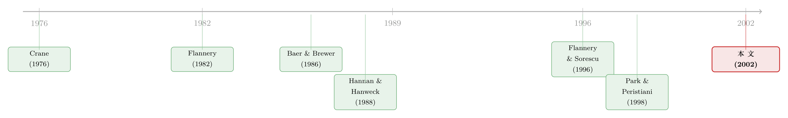

保险之外的那笔存款，正在替监管者盯着银行
本文读的是 Goldberg & Hudgins (2002, Journal of Financial Economics)：他们用 1984–1994 年全美储贷机构（thrifts）的季度报表，盯住一个被忽视的指标——「未保险存款占总存款的比例」。结论是，机构离倒闭越近，这个比例就越低；而且随着 FIRREA、FDICIA 两部法律相继落地，存款人「用脚投票」的力度也在悄悄变形。一句话：存款保险之外的那部分钱，确实在替监管者盯着银行的风险。
1 一个被保险「惯坏」的市场
先讲一个常识：在一个正常的市场里，一家财务状况糟糕的公司想借钱是很难的。出借人会本能地担心——这钱还得回来吗？于是利率上去了，额度下来了，甚至干脆没人借给你。这套「价格惩罚坏借款人」的机制，是市场最朴素的纪律。
可银行和储贷机构不一样。它们的存款，由联邦政府的一只基金兜底。于是只要你的余额在 $100,000 的保额之内，你根本不必关心这家机构是不是要垮了——最坏的结果，无非是机构被接管、关门，你几天取不出钱，损失一点利息而已。本金，政府替你保着。
这就埋下了一个著名的「逆向激励」(perverse incentive)：最该被市场惩罚的烂机构，反而能靠存款保险续命。 一家濒死的储贷机构，只要把存款利率开得比同行高一点，储户照样排队把钱送进来——反正有保险，何乐不为？1989 年之前，这些机构还能通过「经纪存款」(brokered deposits) 大规模吸金。结果就是：联邦的这层担保，让本该早早出清的机构活得更久，最终把窟窿越拖越大，账单全摊给了政府。
整个 1980 年代到 1990 年代初，美国的储贷业就是这么一地鸡毛。利率在 1960 年代中期掉头向上，而这些机构资产端是长期固定利率房贷、负债端是短期存款，巨大的「久期缺口」(duration gap) 直接把它们的偿付能力打穿。监管者先是 1980 年的 DIDMCA、1982 年的 Garn-St. Germain 法案修修补补，再是干脆「装睡」——因为负责兜底的联邦储贷保险公司（FSLIC）自己的钱也不够赔了。一大批资不抵债却仍在营业的「僵尸」(zombie) 机构，就这样在一个放松管制的环境里游荡。
这正是本文的舞台。论文从 1984 年起步，因为这是储贷机构【第一次】被要求报告未保险存款、并改交季度报表（此前是半年报）的年份——没有这份数据，下面的故事根本无从讲起。
2 一个简单却锋利的问题
面对这一团乱麻，本文问了一个非常聚焦的问题：
那些拿着「未保险存款」的人——余额超过保额、真金白银暴露在风险里的储户——他们会不会对机构的「死亡迫近」做出反应？
这是一个关于「存款人纪律」(depositor discipline) 的问题。逻辑很直白：保险存款的持有人无所谓，但未保险存款的持有人有真金白银要亏。如果他们是清醒的，那么当一家机构滑向破产时，他们应该会撤资、会要求更高的利率、会索要抵押，或者动用授信额度来对冲。这些反应反过来就会约束机构的冒险行为——这就是市场纪律。
作者的检验思路也极简。他们【不】去研究复杂的利率反应（数据所限），而是死死盯住资产负债表上一个比值：
$$\text{ratio} = \frac{\text{uninsured deposits}}{\text{total deposits}}$$
如果存款人纪律真的存在，那么一家机构越逼近资不抵债，这个比值就该越低；同时，健康机构吸引到的未保险存款占比，应当高于濒死机构。论文把它拆成三个可检验的假设：
- 未保险存款的占比，会在倒闭迫近时下降；
- 偿付能力正常的机构，这一占比高于濒临倒闭的机构；
- 这一占比会随监管环境的变化而变化。
注意第三条——这是本文真正区别于前人的地方，我们后面再说。
3 识别策略：用「倒闭前的倒计时」做事件钟
怎么检验？这里的设计有点像一个事件研究 (event study)，只不过事件不是公告，而是「倒闭」本身。
首先，得给「倒闭」(failure) 下个定义。本文把它定义为机构遭遇的【第一次】监管行动——可能是受援助或受监管的并购、稳定化处理、接管、或进入「管理托管计划」(management consignment program)。比如某机构先被纳入托管、18 个月后才清算，那「倒闭日」就锚定在进入托管的那一刻。作者还专门处理了机构编号（docket number）的变更，把同一家机构的多次行动合并，只认第一次。这一步很关键——它保证了「倒计时」的起点是干净的。
接着，对每一家倒闭机构，取它倒闭前【八个季度】的数据，把未保险存款/总存款的比值按「距倒闭还有几个季度」对齐、再在所有倒闭机构间求平均。于是我们得到了一条以「倒闭」为原点的倒计时曲线。
为了把这件事做得更稳，作者又上了一个带年份虚拟变量的线性增长模型 (linear growth model)。最核心的解释变量叫 Time，含义是「距离倒闭还剩几个季度」。请务必记住它的方向：Time 越大，离倒闭越远。所以——
这个模型的妙处在于：Time 的系数若【显著为正】，就等价于说「随着倒闭逼近（Time 减小），未保险存款占比下降」——这正是假设一要的东西。而那一组年份虚拟变量 \(D_k\)，则替假设三埋了伏笔：不同的倒闭年份，截距会不会系统性地不同？如果会，那就说明监管环境的更替确实改写了存款人的行为。
标准误方面，论文报告的是 t 值，对趋势项和各年份虚拟变量逐一检验，显著性以 5% 双尾为准。
4 数据：一张被「窗饰」清洗过的报表
数据来自 FSLIC/SAIF 投保的【全部】储贷机构所报的季度财务报告，外加监管机构生成的清算、接管、并购（按类型标注）以及进入管理托管计划的名单。样本期 1984–1994，受限于「未保险存款」这一项自 1984 年才有可比数据。
一个值得点赞的细节：作者用的是每年四个季度的平均值，目的是削弱「窗饰」(window-dressing) 效应——也就是机构在报表日前临时美化数字的把戏。盯季报、再做年内平均，这把尺子算是磨得比较细了。
样本规模上，倒闭机构数量本身就是个有故事的数字：1986–1988 年有 298 家储贷机构倒闭，而 1992–1994 年只有 74 家。这个失败率的剧降，本身就是后面解读结果的关键背景。线性增长模型则覆盖 1986 年 1 月到 1994 年 12 月、拥有完整八季度数据的 619 家倒闭机构，合计 4,952 个观测（619 × 8）。
5 主要结果：曲线确实在「下沉」
先看那条倒计时曲线。结果非常干净：无论在 FSLIC 时期还是 SAIF 时期，未保险存款占比都随倒闭逼近而单调下降（SAIF 期只有一个季度持平）。
具体到数字。在 FSLIC 时期（机构倒闭于 1986–1988，n = 298），距倒闭还有 8 个季度时，占比是 0.051；一路降到倒闭前最后一个季度的 0.024——几乎腰斩。SAIF 时期（倒闭于 1992–1994，n = 74）同样下沉，从 0.092 降到 0.055。每个时期内部的变化在 5% 水平上统计显著。
这就是假设一的直接证据：钱在用脚投票，离倒闭越近，跑得越多。
但这里藏着第一个反转。你有没有注意到——SAIF 时期每一个季度的占比，几乎都是 FSLIC 时期的【两倍】？倒闭前夕一个是 0.024，另一个是 0.055。同样是濒死机构，为什么后一个时期还能留住这么多未保险存款？作者给出的解释里，最有说服力的一条是那个失败率的剧降：当 1992–1994 年只有 74 家机构倒闭、远少于 1986–1988 年的 298 家时，整个行业的「安全感」回来了，储户也就更愿意持有未保险存款。换句话说，存款人纪律的【强度】，本身是随大环境浮动的。 这恰恰是假设三想说的事。
再看线性增长模型，证据更细腻。趋势项 Time 的系数为 0.003（t = 7.276），显著为正——确认了「越近倒闭、占比越低」。而真正有意思的是那组年份虚拟变量：1987–1992 这六年都显著，1993、1994 则不显著（这两年样本里分别只有 8 家和 4 家倒闭，几乎没法识别）。负得最狠的是 1989 年，系数 -0.040（t = -5.289）——而 1989 正是 FSLIC 被正式宣告破产、大批机构被关、SAIF 诞生的那一年。市场在那一年用最猛的力度抽走了未保险存款。
而唯一一个【为正】的年份虚拟变量，是 1992 年，系数 0.023（t = 5.697）——恰好是 FDICIA 通过后的第二年。法律刚刚收紧、监管纪律加码，存款人反而稍稍放松了警惕。这一正一负，把「监管纪律」和「存款人纪律」之间那种微妙的替代关系，照得清清楚楚。
6 真正关键的一步：把「替代关系」逼出来
到这里，论文做了它最聪明的一件事——它没有停在「存款人会跑」这个早已被前人证明过的结论上，而是去问：当法律改变了游戏规则，存款人的反应会怎么变？
这就要请出失败机构与健康机构的对照检验（论文的 Table 3，分三个面板）。
Panel A 比较的是失败机构与所有健康机构在未保险存款占比上的均值差异（报告 t 值，负值表示失败机构的占比更低）。结论是：随着倒闭逼近，这个 t 值越来越负；在 1987、1988、1991、1994 这几个失败年份，倒闭前一年的差异都在统计上显著。
但作者很诚实地指出：有几个格子是【正】的，甚至显著为正。 为什么有些将倒闭的机构反而握着更多未保险存款？最直白的解释是——大额存款人「心里有数」，他们要么拿到了高额风险溢价，要么私下被许诺会在清算前得到通知、留出撤退窗口，要么干脆有抵押打底，于是真到倒闭时损失轻微甚至为零。这是一个很重要的诚实：存款人纪律不是铁板一块，总有一批人因为信息、关系或制度漏洞而「免疫」。
Panel B 看的是利息支出/总存款的差异。FSLIC 年代里，失败机构付的利息明显更高（t 值动辄 7、8 乃至 13 以上）——这是「靠高息续命」的铁证。可 1990 年之后，失败机构【不再】比健康机构付更高利息了。为什么？因为 FIRREA 明令禁止资本不达标的机构吸收经纪存款，FDICIA 又把这道闸门焊死。监管直接掐断了「高息续命」这条路。
Panel C 直接盯经纪存款/总负债。同样的故事：FSLIC 年代失败机构远比健康机构爱用经纪存款；进入 SAIF 早期还有余温，但到了后期，FDICIA 的禁令彻底生效——失败机构再也无法用经纪存款来填补那些因恐慌而流失的未保险存款。
于是反转完成了：早期那些「为什么濒死机构反而留得住钱」的反常，很大程度上是因为它们在用经纪存款这条腿走路；当 FDICIA 砍掉这条腿，存款人纪律才显出它「该有的样子」。 监管纪律与存款人纪律，时而替代、时而叠加——这正是本文区别于一票前作的核心贡献。
（关于「存款人到底看不看得懂银行的财报、并据此搬钱」这个更现代的追问，可参见《越透明，越脆弱？——存款人其实看得懂银行的财报》；而当社交媒体把信息传递的速度推向极端时，存款人纪律会不会异化成挤兑的催化剂，可参见《四天，一条推特，挤垮一家银行》。）
7 文献脉络
这条研究线的母题，是一个争论了几十年的老问题：未保险存款人，到底有没有能力、有没有意愿去惩罚有风险的银行？
早期的证据是【打架】的。Crane (1976)、Cramer & Rogowski (1985) 没能在机构财务状况与大额存单（CD）利率之间找到关系；Avery et al. (1988) 也没在次级债利率与银行业绩之间找到联系。一个流行的解释是：大家都相信监管者会替存款人兜底，或者监管者「手脚够快」，能在存款人受损前就把烂机构关掉。
转折出现在 1980 年代中后期。Baer & Brewer (1986) 和 Hannan & Hanweck (1988) 发现，风险更高的银行确实要为大额 CD 付更高的利率——存款人纪律是【能起作用】的。Flannery & Sorescu (1996) 进一步把战场推到次级债，发现 1983–1991 年的次级债利率会随风险定价，尤其在政府担保被撤走的后几年更明显。

而专门研究「未保险存款数量」（而非利率）的，只有寥寥四篇。Billet et al. (1998) 发现穆迪下调评级会推高银行对【保险】存款的依赖，即挤出未保险存款；Park & Peristiani (1998) 发现 1987–1991 年储贷机构的风险与未保险存款增长负相关、与利率正相关；作者自己的前作 Goldberg & Hudgins (1996) 已经证明 1986–1989 年储贷机构存款人会对倒闭迫近做出反应。本文正是站在后两篇的肩膀上——用一套略有不同的方法、一段更长的样本（1984–1994，横跨 FSLIC 与 SAIF 两个监管制度），把「监管变迁如何改写存款人行为」这一维度补了进来。
8 评论与延伸（Q&A + 研究方向）
(a) 几个可能的疑问
Q：未保险存款占比下降，会不会只是因为机构在垂死时疯狂吸收【保险】存款，分母被做大了，而不是未保险存款真的在跑？
这是个很尖锐的点，作者其实部分承认了。论文明说濒死机构会「靠吸收更多保险存款（包括把大额存单拆成小于 10 万美元的若干段以套全保额）来对冲未保险存款流失对资产负债表的收缩效应」。所以这个比值的下降，既有分子缩、也有分母涨的成分。好在 Panel C 直接看了经纪存款的【绝对】使用，独立佐证了「续命资金」的渠道，使结论不至于只靠一个比值站着。
Q：把「倒闭」定义为第一次监管行动，会不会太早或太宽？
作者的处理相当谨慎——合并 docket number 变更、只认第一次行动，避免一家机构被记成多次倒闭。这个定义偏「早」是有意的：监管行动往往先于法律意义上的清算，用它做事件原点，反而更贴近「市场感知到危险」的时点。代价是，倒闭后仍残留一部分未保险存款，可能正源于这个偏早的定义。
Q：R² 只有 0.066，这模型是不是没什么解释力？
在这种横截面 + 面板的存款行为回归里，低 R² 很正常，不必苛求。关键不在拟合优度，而在
Time系数 0.003（t = 7.276）的符号与显著性——它要回答的是「方向对不对」，而不是「能预测多少」。
Q：1992 年虚拟变量为正，到底说明存款人纪律变弱了，还是监管纪律在替代它？
论文的解读偏向后者。FDICIA 在 1991 年底引入「及时纠正措施」(prompt corrective action)、限制「大到不能倒」、收紧经纪存款，这些都在加码【监管】纪律。当监管者更可信地替你看着风险，存款人自然没那么紧张——这正是「监管纪律是存款人纪律的替代品」这一命题的直接体现。
Q：样本里 1993、1994 只有个位数倒闭，结论还稳吗？
这两年的虚拟变量不显著，作者也老实标注了样本极小（8 家、4 家），1995 年更是只有 1 家而被排除。所以本文真正有力的证据集中在 1987–1992；对 SAIF 后期的推断要保守看待，这也是样本本身的局限，而非方法的瑕疵。
Q：这套「降低保额能增强市场纪律」的政策含义，能直接外推到今天的银行体系吗？
要小心。本文的样本是一个特定危机里的储贷业，且作者自己也说当下美国存款保险基金「财务状况良好、近年鲜有倒闭」。结论的政策价值更多在于「危机情境下的机制」，而非「任何时候都该降保额」。考虑到后来 2008、2023 的经验——降保额可能反而加剧挤兑——这个外推需要格外谨慎。
(b) 几个可能的研究问题与提案
1. 把「存款人纪律 vs 监管纪律」的替代关系搬到公司债市场。
【经济故事】本文的核心是「监管收紧时，私人监督会松弛」。同样的替代逻辑在公司债市场也成立吗？当监管者对某类发行人加强信息披露要求（如 TRACE 透明度改革），债券持有人的「私人监督」（体现为利差对基本面的敏感度）会不会反而减弱？ 【可行性】中。需要 TRACE 成交数据 + 评级/财务面板，识别可借助分阶段推开的透明度规则做双重差分。难点在于剥离透明度本身对利差的直接影响与「监督替代」效应。
2. 外资存款人 vs 本土存款人，谁的纪律更强？
【经济故事】本文的「免疫核心」——那些因关系或私下承诺而不撤资的存款人——多半是本土的、嵌入关系网的大客户。外资存款人没有这层关系，理论上应当反应更快、更「纯粹」。这能否解释跨国银行在危机中的存款流出结构？ 【可行性】中偏低。需要按存款人国籍拆分的银行负债数据，这类数据极难获得，可能只在个别国家的监管报表里存在。
3. 经纪存款禁令作为一次干净的「续命渠道」断供实验。
【经济故事】FDICIA 禁止资本不达标机构吸收经纪存款，等于人为切断了濒死机构的一条续命腿。这是一个近乎断点的政策冲击。卡在资本门槛两侧的机构，其后续存活时间、最终损失率有无显著差异？ 【可行性】高。资本充足率门槛天然提供断点回归 (RDD) 的运行变量，FDIC 的机构层面数据公开可得，识别相对干净。这是本文留下的最 doable 的延伸。
4. 把「失败率水平」内生进存款人纪律的强度。
【经济故事】本文观察到 SAIF 时期占比是 FSLIC 时期的两倍，并归因于失败率剧降带来的安全感。能否把「行业整体失败率」直接作为调节变量，量化存款人纪律强度随系统性风险的弹性？ 【可行性】中。需要跨多次银行业危机的面板（如各国危机数据库），用失败率与个体风险的交互项识别；难在不同危机的制度差异需要控制。
9 我的判断
先说贡献。这篇论文的价值不在于「证明存款人纪律存在」——这件事 Baer & Brewer (1986) 以降已被反复确认；它真正的增量，是把监管制度的更替作为一个变量请进了模型，并干净地展示出「存款人纪律」与「监管纪律」之间此消彼长的替代关系。1989 年那个最负的虚拟变量、1992 年那个唯一为正的虚拟变量，配上 Panel B/C 里经纪存款与高息续命渠道被 FDICIA 切断的证据，构成了一条相当自洽的叙事链。这是一篇方法朴素、但问题问得准的小而美的论文。
再说对识别的担忧。最大的软肋在那个核心比值——分子（未保险存款）和分母（总存款）会同时被濒死机构的「拆单凑保额、狂吸保险存款」行为污染，因此「占比下降」既可能是纪律、也可能是会计操作。作者用 Panel C 的经纪存款【绝对量】部分对冲了这一担忧，但比值本身的内生性始终悬在那里。其次，把「倒闭」锚定在第一次监管行动，虽然处理得谨慎，但监管行动的时点本身是监管者选择的结果，与存款流出可能互为因果——存款跑得快，反而催来了监管行动。这一层反向因果，论文没有正面处理。
最后说我想看到的。我最想看到的是把这套框架接到一个有清晰断点的政策冲击上——比如上面提的 FDICIA 经纪存款禁令，用资本门槛做 RDD，把「续命渠道断供」的因果效应干净地估出来。另外，本文止步于「资产负债表的数量反应」，而对利率反应（因数据所限）几乎没碰；如果能补上 SAIF 期那份「10 万美元以上 CD 的平均利率」数据，把「数量」与「价格」两种存款人纪律放进同一个框架对照，这篇论文的说服力会更上一层。
参考文献
- Avery, R., Belton, T., Goldberg, M. (1988). Market discipline in regulating bank risk: new evidence from the capital markets. Journal of Money, Credit, and Banking 20, 597–610.
- Baer, H., Brewer, E. (1986). Uninsured deposits as a source of market discipline: some new evidence. Federal Reserve Bank of Chicago, Economic Perspectives X (Sept./Oct.), 23–31.
- Billet, M., Garfinkel, J., O'Neal, E. (1998). The cost of market versus regulatory discipline in banking. Journal of Financial Economics 48, 333–358.
- Calomiris, C. (1990). Is deposit insurance necessary? A historical perspective. Journal of Economic History 50, 283–295.
- Crane, D. (1976). A study of interest rate spreads in the 1974 CD market. Journal of Bank Research 7, 213–224.
- Ely, B. (1994). Financial innovation and deposit insurance: the 100 percent cross-guarantee concept. Cato Journal 13, 413–436.
- Flannery, M. (1982). Deposit insurance creates a need for bank regulation. Federal Reserve Bank of Philadelphia, Business Review (Jan./Feb.), 17–27.
- Flannery, M., Sorescu, S. (1996). Evidence of bank market discipline in subordinated debenture yields: 1983–1991. The Journal of Finance 51, 1347–1379.
- Goldberg, L., Hudgins, S. (1996). Response of uninsured depositors to impending S&L failures: evidence of depositor discipline. The Quarterly Review of Economics and Finance 36, 311–325.
- Goldberg, L., Hudgins, S. (2002). Depositor discipline and changing strategies for regulating thrift institutions. Journal of Financial Economics 63, 263–274.
- Hannan, T., Hanweck, G. (1988). Bank insolvency risk and the market for large certificates of deposit. Journal of Money, Credit, and Banking 20, 203–211.
- Kane, E. (1985). The Gathering Crisis in Federal Deposit Insurance. MIT Press, Cambridge, MA.
- Park, S., Peristiani, S. (1998). Market discipline by thrift depositors. Journal of Money, Credit, and Banking 30, 347–364.